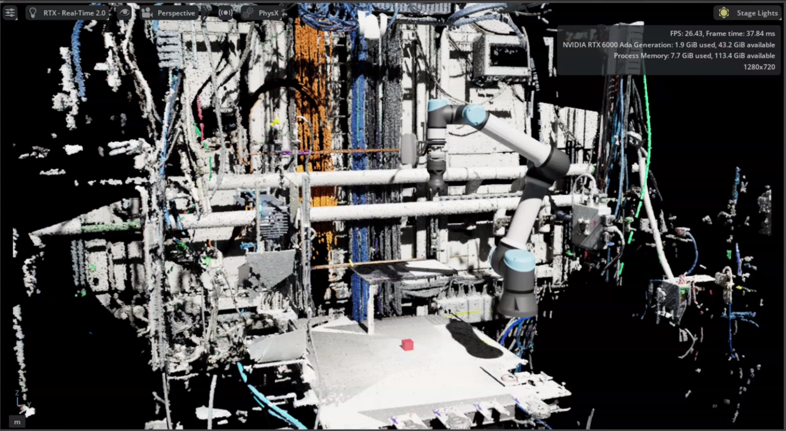

Survey mapping
Survey mapping creates point clouds of the physical cell for use in NVIDIA Isaac Sim. It combines wrist-camera captures from several viewpoints into one binary PLY file, providing a measured representation of the robot’s surroundings.
{kind=link}

A survey point cloud displayed in Isaac Sim alongside the robot model. Open the full-resolution screenshot.
{kind=link}
The workflow has three stages: record viewpoints → capture a survey → merge the recording. These scripts produce the point cloud; importing it and setting up the scene in Isaac Sim are separate steps.
These tools live in scripts/survey_mapping/. The survey runner sends moves directly to beambot_moveto, outside the main task queue. Run it separately from GUI or orchestrator tasks.
Before you start
Run the commands below from the repository root, with ROS and the workspace sourced. For live capture, the installation needs:
The beamline configuration selected through
BEAMBOT_BEAMLINE_CONFIG.The stack started with
./utils/start_mcp_nobag.sh, so the large survey clouds are not written into the general experiment bag.MoveIt already initialized with the model for the attached tool, and the
beambot_movetoaction available.A Zivid camera providing
/captureand/points/xyzrgba. Main bringup needsenable_vision:=trueto start its camera and vision servers.
Follow installation and setup and operating EROBS first. The survey runner cannot trigger the orchestrator’s lazy MoveIt startup; an available action server alone is not enough.
Warning
run_survey.py --dry-run still moves the robot through the viewpoints. It skips camera capture, camera-settings changes, and bag recording. It is a motion rehearsal, not a plan-only preview.
1. Record viewpoints
Position the arm using the installation’s normal procedure, then record each view:
python3 scripts/survey_mapping/teach_survey_poses.py \
--output survey_poses.yaml
The teacher reads /joint_states; it does not move the arm or enable freedrive. Press Enter to save the current viewpoint, u to undo the last saved view, and q to finish and write the file.
Each named viewpoint contains six joint angles in degrees, in this order: shoulder pan, shoulder lift, elbow, wrist 1, wrist 2, wrist 3. Use --append to extend an existing file; otherwise, saving replaces it.
The repository includes 77 recorded viewpoints in scripts/survey_mapping/survey_poses.yaml. Those positions belong to a particular installation. The examples here use your own survey_poses.yaml in the repository root, leaving the bundled file unchanged.
2. Capture the survey
With the viewpoints checked for the current cell and tool, run:
python3 scripts/survey_mapping/run_survey.py \
--poses survey_poses.yaml \
--bag-out survey_session
For each viewpoint, the runner moves the arm, waits 1.5 seconds to settle, triggers /capture, and waits for a new cloud on /points/xyzrgba. Avoid other capture requests during the survey: the runner accepts the next cloud message without matching it to a particular request.
By default, it attempts to apply manufacturing_specular.yml from src/beambot/config/zivid/ (using the installed copy when available). If settings cannot be applied, it logs a warning and continues with the camera’s current settings. It does not restore the previous settings afterward.
Option |
Use |
|---|---|
|
Apply a different Zivid preset. |
|
Keep the camera’s current settings. |
|
Run only the first N viewpoints; |
|
Change the pause after each move. |
|
Use a recorder you manage separately. |
The runner refuses an existing bag output directory. Its recorder includes /points/xyzrgba, /tf, /tf_static, and /joint_states; the supplied QoS override applies specifically to /tf.
A failed move stops the survey. A capture that produces no cloud is reported as incomplete, but the runner continues to later viewpoints. Check the final completed/total count and the recorded bag before merging; an interrupted or incomplete session may still leave a usable partial recording.
3. Merge the recording
Merging runs offline with ROS libraries available; it does not need a running robot or camera:
python3 scripts/survey_mapping/merge_survey_bag.py \
--bag survey_session \
--out survey_map.ply \
--voxel 0.005
The defaults are the base_link frame, a 2 m maximum range from the camera, and 5 mm voxels. The merger removes invalid points, filters by range, transforms the clouds, and averages points within each voxel. It writes a binary PLY file, including color when every merged cloud provides it. An existing output file is overwritten.
Cloud alignment uses recorded transforms; the merger does not estimate alignment from overlapping surfaces or correct calibration errors. In its default mode, it looks up TF at each cloud’s timestamp using transforms already read from the bag. Clouds without a transform are skipped and are not retried later. Check warnings and the final merged-cloud count.
If the bag lacks moving-arm TF, add --urdf PATH with an expanded URDF matching the captured robot and camera calibration. This replaces TF lookup with forward kinematics using the latest preceding joint-state message. It does not interpolate joints to the cloud timestamp.
The optional --self-check checks voxel averaging, color averaging, and a translation transform. It does not validate a bag or the survey’s physical alignment.
To use measured geometry for collision checking, see the separate Octomap workflow.